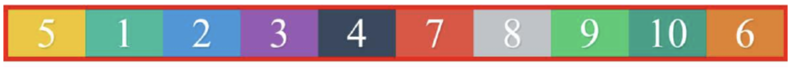

1
2
3
4
5
6
7
8
9
10
Realiza un diseño de divs que se asemeje lo máximo posible al siguiente, usando Flexbox. No tiene que mostrarse al alto completo que permita el navegador. Simplemente se mostrará una fila en la parte superior de la página. Debes observar muy bien el orden: el 5 es el primero y el 6 el último. Los divs, en el código html, deben estar ordenados normalmente (del 1 al 10), pero debes modificar el orden de los divs 5 y 6 mediante la propiedad css "order". Como truco, para que todos los divs tengan el mismo ancho, repartiéndose por igual el que tiene el navegador, debes usar una propiedad css como esta: "flex: 1;" en cada uno de los divs dentro de la fila. Con esa propiedad estas estableciendo el peso de cada div, como todos tendrán el valor "1", todos ocuparán el mismo espacio.
